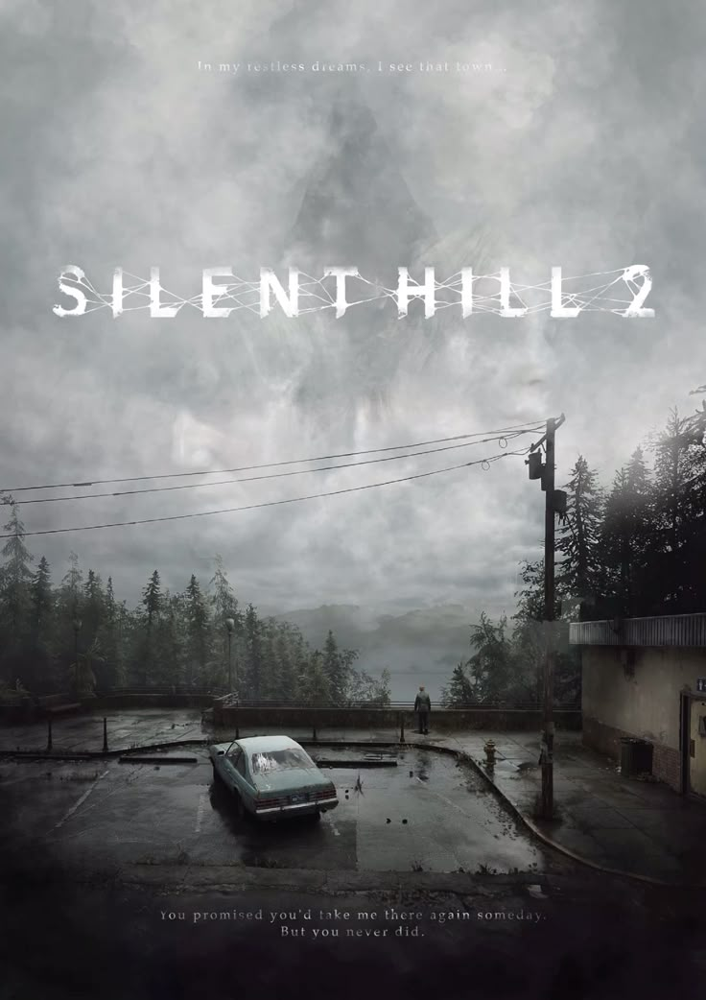
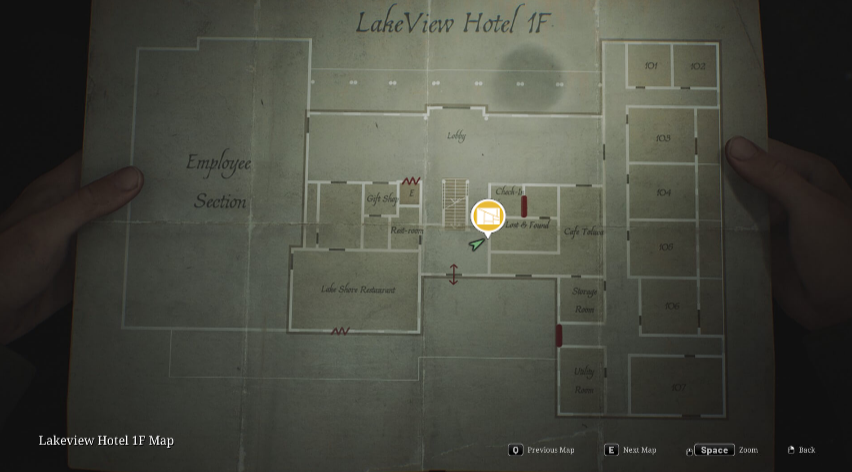

Personagens
James, Maria, Angela e Eddie carregam histórias pesadas e ajudam a revelar o que realmente aconteceu em Silent Hill.
Lançamento: 2001
Desenvolvedora: Team Silent

Silent Hill 2 é um jogo de terror psicológico lançado em 2001 pela Konami. Nele, James Sunderland recebe uma carta de sua esposa Mary, morta há três anos, pedindo que ele a encontre em Silent Hill.
Na cidade coberta de neblina, James enfrenta criaturas e encontra personagens perturbados, enquanto descobre a verdade sobre o seu passado. A trilha de Akira Yamaoka e o Pyramid Head são marcas do jogo, que ganhou um remake em 2024.
James, Maria, Angela e Eddie carregam histórias pesadas e ajudam a revelar o que realmente aconteceu em Silent Hill.
Composta por Akira Yamaoka, mistura sons industriais e melodias melancólicas que ajudam a criar o clima de angústia do jogo.
A Bloober Team recriou o clássico com gráficos modernos, mantendo a história e a atmosfera do original.

Rua Lakeview, 2001 - Margem do Toluca Lake
Silent Hill, Maine - EUA
Ponto de referência: ao lado do Toluca Lake
Horário: Quando a névoa permitir...
James Sunderland, um homem que recebe uma carta da esposa Mary, morta há três anos, pedindo que ele a encontre em Silent Hill.
Akira Yamaoka, que mistura sons industriais com melodias melancólicas para criar o clima de angústia.
Sim. O remake foi lançado em 2024 pela Bloober Team, com gráficos modernos e a mesma história do original.
Uma criatura que persegue James pela cidade. Ele é uma das marcas da série e simboliza a culpa do protagonista.
Quer saber mais sobre a história de Silent Hill 2? Entre em contato e descubra tudo sobre o jogo.
Saiba mais